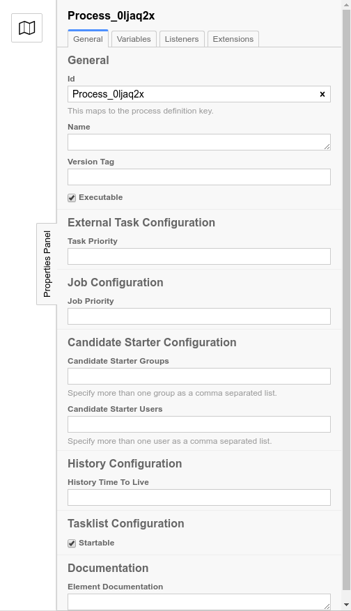

<div id="modeler">
  <iframe class="embeddedVariant" src="./no-border"></iframe>
</div>


<select class="version-select" type="select">
  <option value="A">Option A</option>
  <option value="B">Option B</option>
  <option value="C">Option C</option>
</select>

<style>
  iframe {
    border: 0;
    width: calc(100% - 510px);
    height: calc(100% - 100px);
    overflow: hidden;
  }

  #modeler {
    display: inline;
    vertical-align: top;
  }

  body {
    overflow: hidden;
    margin: 0;
  }

  .version-select {
    position: absolute;
    bottom: 20;
    left: 20;
  }

</style>

<script>
  const params = new URLSearchParams(location.search);
  let iframe = document.querySelector('.embeddedVariant');
  let select = document.querySelector('.version-select');
  let selectedOption = params.get('option') || 'A';
  select.value = selectedOption;


  const setVersion = version => {
    switch (version) {
      case 'A':
        iframe.src = './no-border'
        break;
    
      case 'B':
        iframe.src = './fixed-border'
        break;

      case 'C':
        iframe.src = './resizable-border'
        break;

      default:
        break;
    }

    params.set('version', version);
    window.history.replaceState({}, '', `${location.pathname}?${params.toString()}`);
  }

  setVersion(selectedOption);

  document.querySelector('.version-select').addEventListener('change', function() {
    setVersion(this.value);
  })
</script>